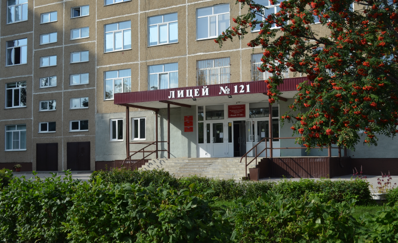

МБОУ "Лицей № 121"
Открытие школы № 121 состоялось в 1989 году. 1 марта 2001 года присвоен статус лицея. Лицей реализует образовательные программы углубленного изучения математики (7-9 классы), профильного обучения (10-11 классы). Работают школьный спортивный клуб, студия балета, изостудия, ведется обучение на музыкальных инструментах. Сегодня лицей – это 1729 школьников, 82 педагогических работника.
